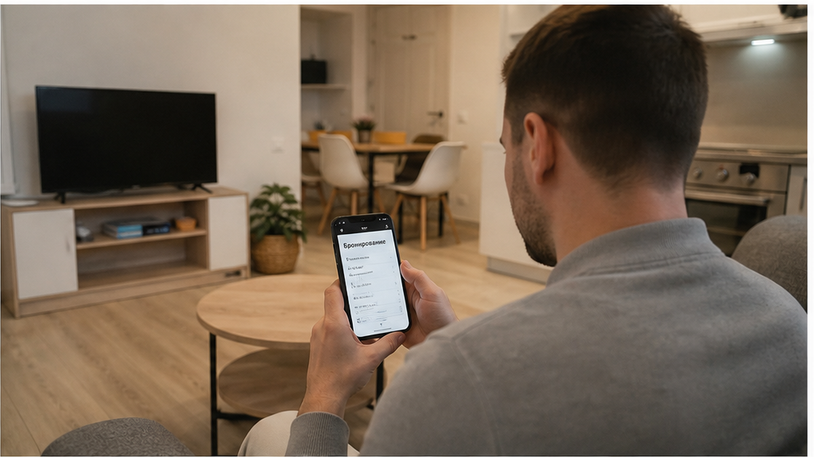
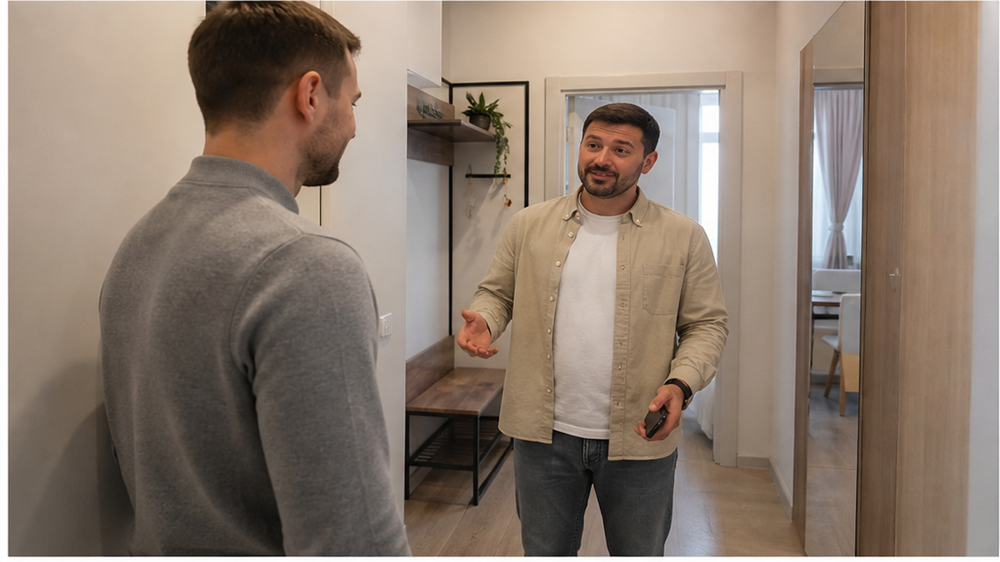
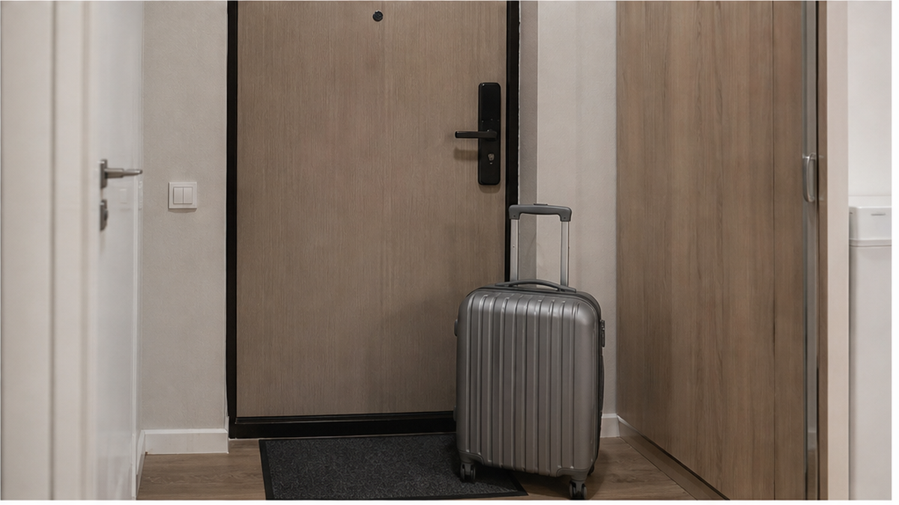

«Оплата уже прошла на платформе. Но код от двери отправлю после перевода 3 200 ₽ на карту». Гостья перечитала сообщение у подъезда: одну ночь в Тюмени она уже оплатила через сервис — около 5 100 ₽, а в объявлении стоял фильтр «без предоплаты». До квартиры оставался один шаг, но условие внезапно стало другим: сначала деньги незнакомому человеку, потом код.
Она не перевела. Потому что «без предоплаты» заканчивается там, где за доступ в квартиру просят ещё одну оплату напрямую. Даже если хозяин торопит, рассказывает про других желающих и уверяет, что сумма «вернётся при заселении».
Я хост посуточной в Тюмени. Это «Добрый дом». Если такие переписки попадаются вам в дороге, можно прислать их в Telegram или MAX — посмотрим вместе без лишней паники.

Гостья бронировала квартиру на две ночи. В карточке увидела подходящий вариант, выбрала фильтр «без предоплаты», а одну ночь оплатила через саму платформу — примерно 5 100 ₽. В её понимании дальше всё было понятно: приехать, получить код, заселиться, а остальные условия закрыть по правилам объявления.
Но перед входом пришло сообщение: «Чтобы получить код, переведите 3 200 ₽ на карту Светлане. Это за первую ночь, потом всё учтём». На вопрос, почему требуется ещё одна сумма, хозяин ответил: «Платформа — это отдельно. У нас так подтверждается заселение».
Вот этот перелом и важнее самой суммы. Гостью не предупредили заранее, не показали новое условие до оплаты на платформе и не предложили внести деньги через безопасный способ бронирования. Правило появилось в тот момент, когда человек уже потратил время, оплатил дорогу и стоит с чемоданом рядом с нужным домом.

Код от двери — это не товар, который нужно покупать отдельно. Он лишь открывает доступ к жилью, которое уже должно быть забронировано и оплачено по понятным условиям — не как в случае, когда код есть, а в подъезд с чемоданом не попасть. Если для получения кода требуется перевод на личную карту, меняется не только сумма. Меняется сама схема заселения.
В переписке появились сразу три рычага давления: «переведите прямо сейчас», «у меня ещё желающие» и «без перевода код не отправлю». Гостья уже была в пути, поэтому любое сомнение пытались представить как её каприз. Но срочность не делает новое условие честным.
Особенно настораживает связка: оплата на платформе уже прошла, а после неё просят заплатить ещё раз напрямую — как в истории бронь на Авито оплачена, в чате просят второй перевод. Даже если хозяин называет это «подтверждением», «страховкой» или «возвратным платежом», требование должно быть видно до бронирования, а не появляться у двери.
Похожую механику мы разбирали в истории «Без залога» в фильтре, залог у двери. Формулировки разные, но боль одна: на площадке обещают одно, а в последний момент добавляют другое.

В такой ситуации не нужно спорить на десять сообщений. Достаточно спросить: «Если оплата уже прошла на платформе и предоплаты нет, за что именно я перевожу 3 200 ₽ до получения кода?»
У нормального хозяина есть ясный ответ, который совпадает с объявлением и условиями бронирования. Если это залог, он заранее указан. Если это доплата, она видна до оплаты. Если это ошибка платформы, хозяин решает её через поддержку, а не просит гостя отправить деньги на карту чужого человека.
В этом случае вместо объяснения появились раздражение и новая сумма: сначала 3 200 ₽, затем хозяин написал, что «теперь уже 3 500 ₽, потому что долго выясняете». Такая перемена только усилила сомнения. Цена не должна расти за то, что гость задаёт обычный вопрос о своих деньгах.
А вы бы перевели 3 200 ₽, если квартира уже оплачена на платформе и без перевода не дают код? Или отменили бы поездку, даже потеряв деньги за такси? Расскажите, как поступили бы, в Telegram или MAX — там можно обсудить конкретную переписку.
Гостья не стала покупать код. Она обратилась в поддержку платформы, сохранила скриншоты и отказалась от перевода. Часть расходов всё равно осталась: дорога, потерянное время и уже оплаченная ночь, которую пришлось отдельно выяснять с сервисом.
Но 3 200 ₽ не ушли неизвестно кому. И не возникла следующая просьба: доплатить ещё за «позднее заселение», «проверку паспорта» или «возвратный залог». В подобных историях сумма часто растёт именно после первого перевода — как после предоплаты, после которой в чате тишина: человек уже вложился и надеется спасти бронь.
Позже гостья нашла другое жильё и оплатила его на тех условиях, которые увидела заранее. Это не самый приятный финал, но он лучше, чем стоять перед закрытой дверью и пытаться вернуть деньги по переводу на чужую карту.
Мы заранее проговариваем стоимость, залог, порядок оплаты и способ получения доступа. Если написано «оплата при заселении», значит, деньги вносятся при заселении, а не за несколько минут до кода. Если бронь уже оплачена на площадке, мы не просим повторить ту же оплату напрямую.
Гость сначала понимает, где будет жить и сколько это стоит. Затем получает доступ к квартире. Не наоборот. Код не должен превращаться в рычаг, которым человека вынуждают переводить деньги в спешке.
Фильтр «без предоплаты» не спасает от перевода на карту, если хозяин просит деньги до кода. Сначала ясные правила и подтверждение жилья, потом оплата — не наоборот.
Нужно забронировать квартиру в Тюмени или проверить переписку перед заселением?
Telegram: t.me/Dobriy_dom_72
MAX: max.ru/id660300569233_biz
Менеджер: t.me/Dobriy_dom_Tyumen
Бронирование: добрыйдом-72.рф · /booking/
Телефон: +7 993 574-83-22